Czym jest półprzewodnik
Półprzewodnik to materiał, którego przewodnictwo można zmieniać w szerokim zakresie — domieszkami, światłem, temperaturą. Leży pomiędzy metalem a izolatorem. Najpopularniejszy jest krzem (Si). Z półprzewodników robi się diody, tranzystory i układy scalone.
Model pasmowy
Elektrony w krysztale mogą mieć energię tylko z pewnych przedziałów — pasm:

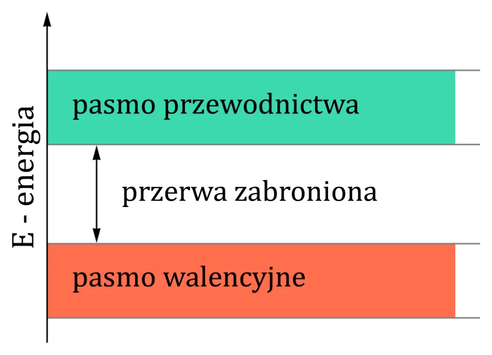
- pasmo walencyjne — elektrony „przywiązane” do swoich atomów,
- pasmo przewodnictwa — elektrony uwolnione, mogą się poruszać i przewodzić prąd,
- pasmo zabronione (przerwa energetyczna) — energia, której elektron mieć nie może; żeby przewodzić, musi ją „przeskoczyć”.
W izolatorze przerwa jest bardzo szeroka. W półprzewodniku jest wąska — w temperaturze pokojowej tylko nieliczne elektrony mają dość energii, żeby ją pokonać, więc czysty krzem zachowuje się prawie jak izolator.
Po ludzku
Parter i piętro bez schodów. Na parterze (pasmo walencyjne) jest ciasno i nikt się nie rusza. Na piętrze (pasmo przewodnictwa) jest pusto i można biegać. Przerwa zabroniona to wysokość, na którą trzeba podskoczyć. W metalu parter i piętro się stykają, w izolatorze piętro jest za wysoko, a w półprzewodniku — da się doskoczyć, jeśli ktoś pomoże.
Dziury
Gdy elektron przeskoczy do pasma przewodnictwa, zostawia po sobie puste miejsce — dziurę. W atomie jest wtedy o jeden ładunek ujemny za mało, więc dziurę wygodnie traktować jak ładunek dodatni „+”, który też może się przemieszczać.
Półprzewodnik samoistny
Idealnie czysty, bez domieszek. Liczba wolnych elektronów równa się liczbie dziur (n = p), bo powstają parami. W temperaturze 0 K nie ma żadnych; im cieplej, tym więcej par elektron–dziura. Przewodzi słabo.
Domieszkowanie: typ n i typ p
Dodając odrobinę innego pierwiastka, można radykalnie zwiększyć liczbę wolnych elektronów albo dziur.

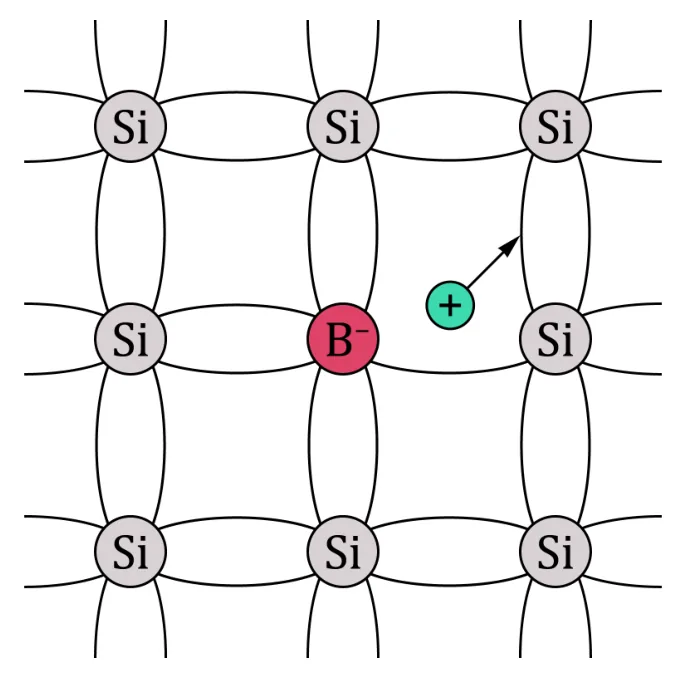

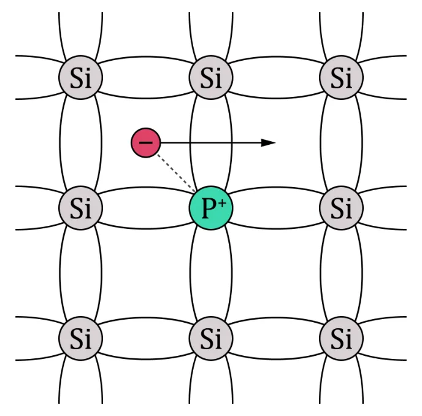
| Typ n | Typ p | |
|---|---|---|
| Domieszka | donorowa („dawca”): pierwiastek V grupy — fosfor (P), arsen (As) | akceptorowa („biorca”): pierwiastek III grupy — bor (B), glin (Al) |
| Co się dzieje | domieszka ma 5 elektronów walencyjnych, krzem 4 → piąty jest wolny | domieszka ma 3 elektrony, krzem 4 → brakuje jednego, powstaje dziura |
| Nośniki większościowe | elektrony (n > p) | dziury (p > n) |
| Skojarzenie | n jak negative | p jak positive |
Złącze p-n
Gdy zetkniemy półprzewodnik typu p z typem n, na granicy dzieje się coś ciekawego:
- Elektrony z obszaru n dyfundują do p, dziury z p — do n.
- Tam się spotykają i znoszą — to rekombinacja.
- Przy samej granicy nie zostaje żadnych wolnych nośników — powstaje obszar zubożony (warstwa zaporowa), który nie przewodzi.
- Po jednej stronie zostaje nadmiar ładunku „+”, po drugiej „−”, więc pojawia się napięcie — bariera potencjału Vbi, która zatrzymuje dalszą dyfuzję.

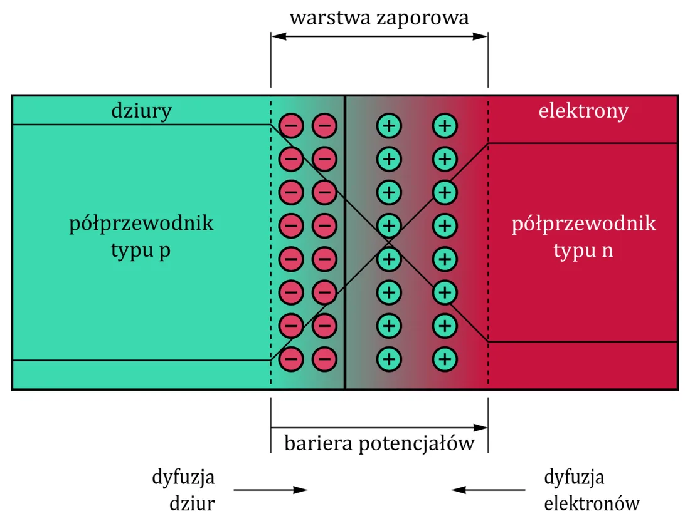
Dwa kierunki

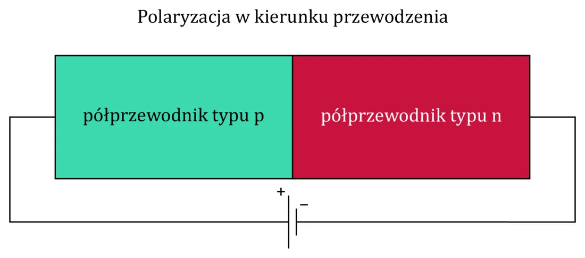

- Kierunek przewodzenia: „+” do obszaru p, „−” do n. Zewnętrzne napięcie pokonuje barierę i złącze przewodzi — ale dopiero, gdy napięcie osiągnie wartość bariery.
- Kierunek zaporowy: „−” do p, „+” do n. Bariera i obszar zubożony się powiększają, prąd nie płynie.
Dioda
Złącze p-n z dwiema końcówkami to dioda — element, który przepuszcza prąd tylko w jedną stronę. Końcówka po stronie p to anoda, po stronie n — katoda. Prąd płynie od anody do katody (tak jak pokazuje „strzałka” symbolu).

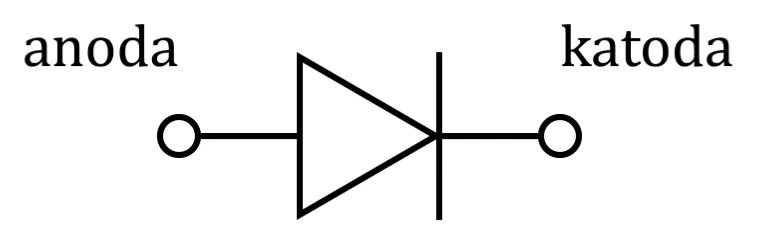
Po ludzku
Dioda to zawór zwrotny w rurze albo drzwi obrotowe w metrze: w jedną stronę przejdziesz, w drugą nie. I trzeba lekko popchnąć (ok. 0,6 V), żeby w ogóle ruszyły.

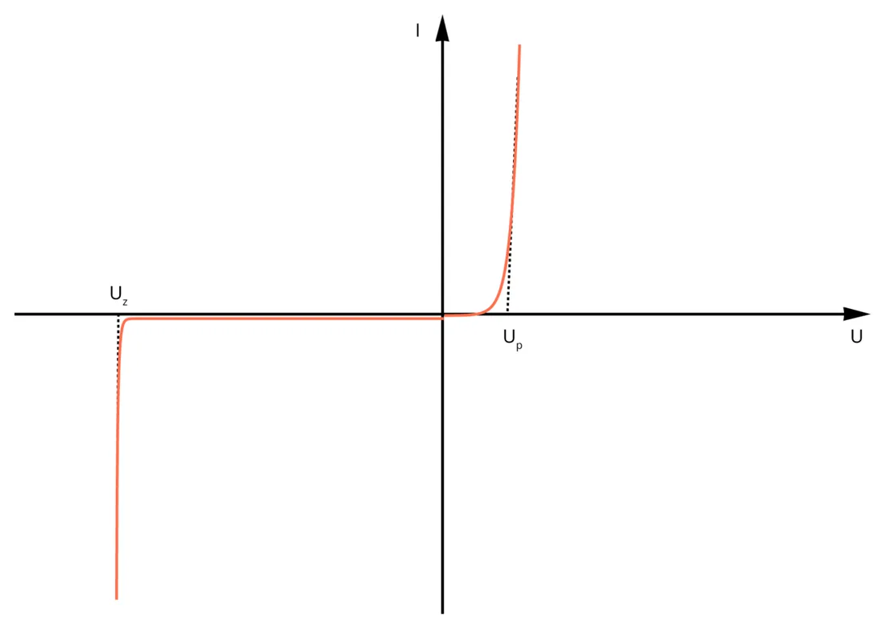
Prawdziwa charakterystyka jest nieliniowa, więc do obliczeń używa się uproszczeń:

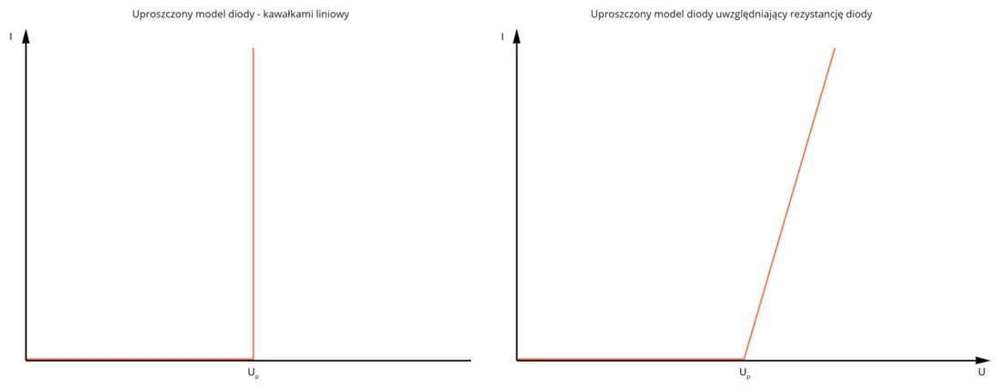
- Poniżej napięcia progowego VD0 dioda nie przewodzi (prąd rzędu 1 nA).
- Dla diod krzemowych VD0 ≈ 0,6 V.
- Powyżej progu przewodzi, a napięcie na niej prawie się nie zmienia.
Dioda LED i rezystor
Dioda świecąca (LED) to też złącze p-n — tyle że energię oddaje jako światło. Ma wyższe napięcie przewodzenia (czerwona ok. 1,8–2 V). Zawsze łączy się ją szeregowo z rezystorem, który ogranicza prąd — bez niego dioda się spali.
Przykład: zasilanie 5 V, LED czerwona (2 V), rezystor 1 kΩ: I = 5 − 21000 = 3 mA.
Dłuższa nóżka LED-a to anoda („+”), krótsza i ścięty bok obudowy — katoda („−”). Tak jest też w materiałach do ćwiczenia 5.
Tranzystor bipolarny
Trzy warstwy półprzewodnika: n-p-n albo p-n-p. Trzy końcówki: emiter (E), baza (B), kolektor (C). Nazywa się „bipolarny”, bo w przewodzeniu biorą udział i elektrony, i dziury.

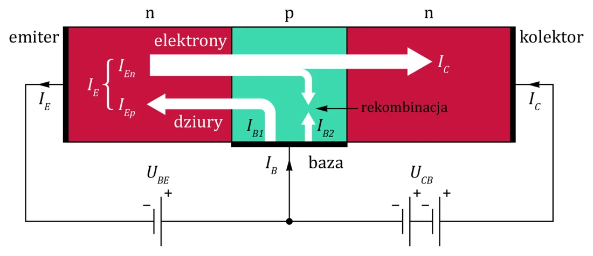
Najważniejsze zdanie wykładu: niewielki prąd płynący między bazą a emiterem steruje dużym prądem płynącym między kolektorem a emiterem.

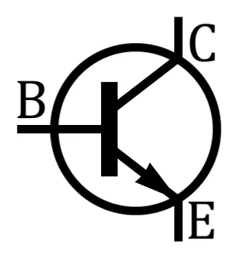

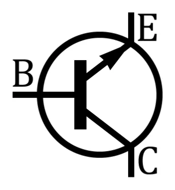
- Strzałka w symbolu zawsze oznacza emiter i pokazuje umowny kierunek prądu.
- NPN jest popularniejszy, bo elektrony są bardziej ruchliwe niż dziury.
- ✚ Mnemotechnika: NPN — „Nie Pokazuje do Nas” (strzałka na zewnątrz).
Po ludzku
Tranzystor to kran. Rura od kolektora do emitera to duży strumień wody. Baza to pokrętło: wystarczy lekko je ruszyć (mały prąd bazy), żeby puścić albo zatrzymać duży strumień. Przy okazji strumień jest proporcjonalny do tego, jak mocno odkręcisz — to wzmocnienie.
Jak „włączyć” tranzystor NPN

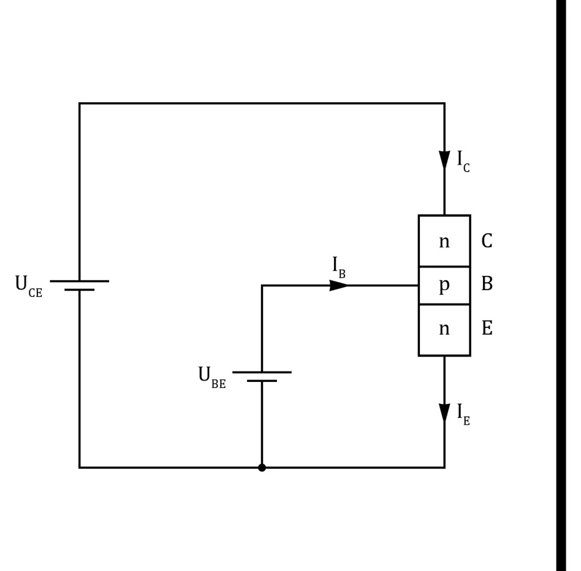
- Złącze baza–emiter trzeba spolaryzować w kierunku przewodzenia: UBE musi przekroczyć barierę, czyli ok. 0,6 V.
- Wtedy płynie prąd bazy IB, a pole elektryczne „przeciąga” elektrony do kolektora — płynie prąd IC.
- Stosunek tych prądów to wzmocnienie prądowe:
Charakterystyki
Tranzystor opisuje się jak czwórnik: wejście (I1, U1) i wyjście (I2, U2).
| Charakterystyka | Zależność | Jak wygląda |
|---|---|---|
| wejściowa | IB = f(UBE) | jak charakterystyka diody (to jest złącze p-n) |
| wyjściowa | IC = f(UCE) | rodzina krzywych — po jednej dla każdego prądu bazy |
| przejściowa | IC = f(IB) | linia prosta o nachyleniu β |

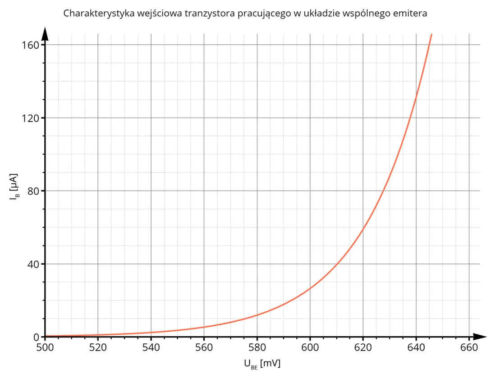

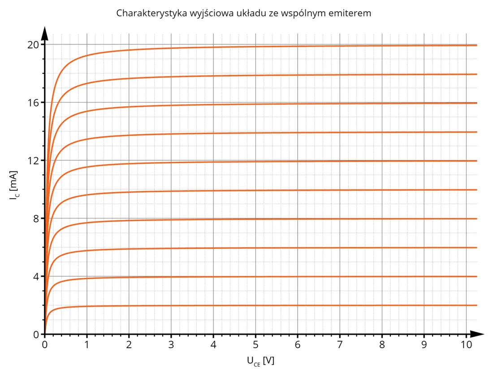
Punkt pracy to konkretny punkt na tych charakterystykach, w którym tranzystor aktualnie pracuje — czyli para (IB, UBE) na wejściu oraz para (IC, UCE) na wyjściu.
Tranzystor jako przełącznik — zapowiedź
W technice cyfrowej tranzystor pracuje w dwóch skrajnych stanach: zatkany (baza bez prądu → kolektor–emiter jak przerwa) albo nasycony (duży prąd bazy → kolektor–emiter prawie jak zwarcie). Wykład wraca do tego w temacie 13, a w praktyce robi się to na ćwiczeniu 5.
Tranzystory polowe
JFET (złączowy)
Najprostszy tranzystor polowy. Trzy elektrody: źródło (S), dren (D), bramka (G). Między źródłem a drenem jest kanał; napięcie na bramce zmienia jego szerokość, a więc opór.

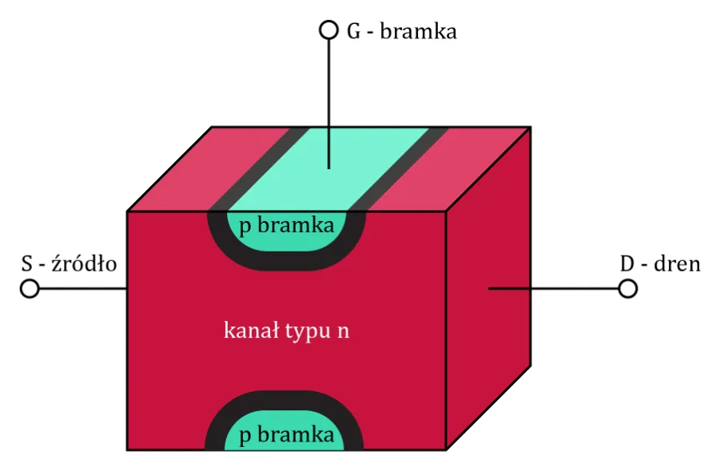

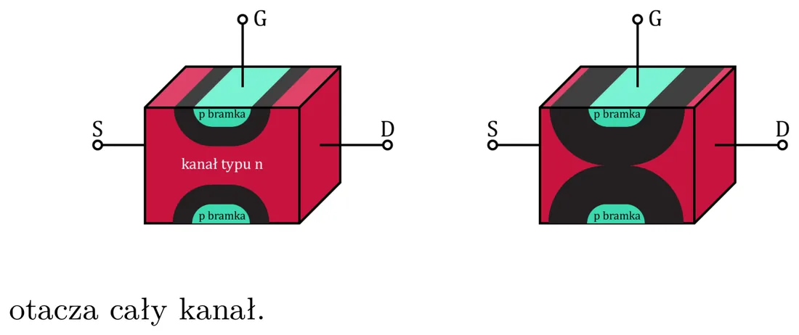
- Złącze bramka–kanał jest spolaryzowane zaporowo, więc przez bramkę prąd praktycznie nie płynie.
- Tranzystor bipolarny jest sterowany prądem (bazy), a polowy — napięciem (bramki).
- Wejście: napięcie VGS, wyjście: prąd drenu IDS. Ich związek opisuje transkonduktancja:

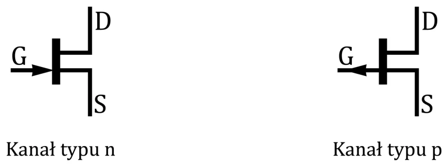
Po ludzku
JFET to wąż ogrodowy, który ściskasz dłonią. Nie dolewasz wody (prąd bramki jest zerowy) — tylko ściskasz mocniej albo słabiej (napięcie bramki), i przez wąż płynie mniej albo więcej.
MOSFET
Metal-Oxide-Semiconductor FET — tranzystor polowy z izolowaną bramką (między bramką a kanałem jest warstwa tlenku). Dostępny z kanałem n albo p. W tej technologii robi się dziś większość układów, zwłaszcza cyfrowych — to z nich zbudowane są bramki CMOS z wykładu 6.

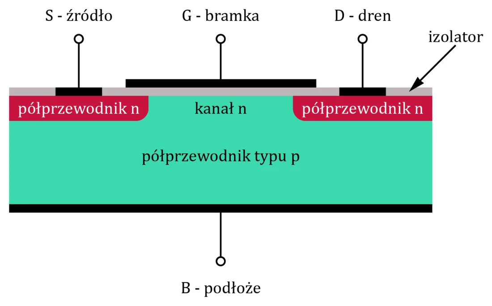